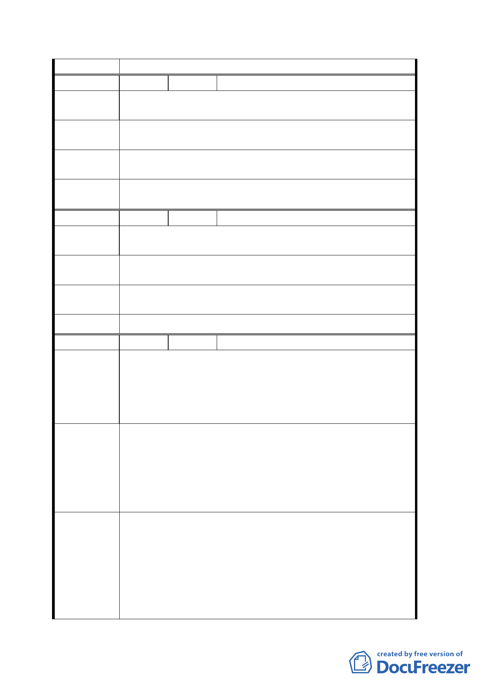

議
編 號 ９ 陳情人 溫明根
陳情理由
建議位置：文山區富德段三小段２９５－３．２９８－１
地號。
建議辦法
面臨路邊１００公尺內提高地價區段徵收配合區段徵收規
定。
專案小組
結 論 有關區段徵收、公告地價事宜將請地政處依徵收規定辦理。
委員會決
議 依專案小組審查結論辦理。
編 號 １０ 陳情人 周鐘順
陳情理由
木柵路五段忍受幾十年日子，受惠全市民的設施應該特別
優惠在地人。
建議辦法
區段徵收能以最高比例分配給地主及地上物之最高額度補
助。
專案小組
結論
同編號 9.
委員會決議 依專案小組審查結論辦理。
編 號 １１ 陳情人 黃印銘
建議位置：富德段二小段二九七地號。
建議理由：列入規劃住商地段雖為道路範圍之內區，但地
陳情理由
勢低於路面外之高灘，宜將高灘強化護堤，並
予高灘地為高價值之用地（如溪床中游高灘生
態區）。
1. 高灘地不應規劃為行水區，一同列區段徵收都市計畫
案。
建議辦法
2.
溪水中游高灘生態區，宜由政府規劃，造景成立自然生
態回復教學區。
3. 同列為區段徵收，將高灘之土挖開，回填路面內之凹
地，讓高灘地真正成為行水區。
93.11.11 專案小組會議結論：
原則同意發展局所提方案，惟請對周邊土地坡度 30%以
專案小組
結論
下部分再予檢視，必要時予以納入，微調計畫範圍。本
案景美溪右岸土地係配合經濟部恢復 82 年堤線所產生
之新生地，已不再是河川區範圍，故併同鄰近平坦保護
區一併檢討變更，至變更為河川區部分，本府養工處亦
將進行開挖、疏濬工程。
九